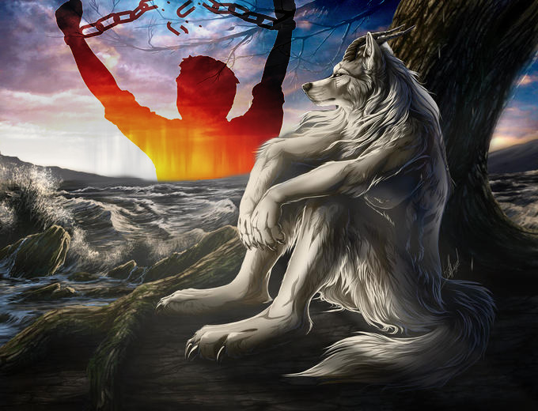

This is my meme mashup between the wolf sitting down meme and the man breaking chain meme. I felt like those two memes really show two common sides of people that can be seen in daily life, which is why I wanted to combine them, similar to two sides of the same coin.
